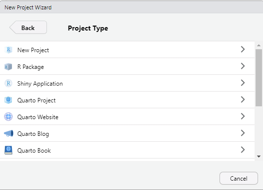
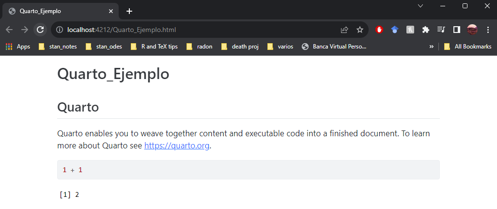

Módulo 4: Introducción a Quarto
Mauricio Moreno, PhD
sábado 5 de diciembre de 2026

Hoy
- ¿Qué es Quarto?
- Preparar el ambiente de trabajo
- Estructura básica de un documento
- Figuras y tablas
- Generar reportes en html, Word y PDF
- Cierre del curso, examen y certificado
¿Qué es Quarto?
Del script al reporte
- Hasta ahora: un script con el código, y luego copiar y pegar números y gráficos en Word.
- Si cambian los datos, hay que repetir todo a mano, y es fácil equivocarse.
- Quarto junta en un solo archivo (
.qmd) el texto, el código y sus resultados. - Al presionar Render, Quarto ejecuta el código y genera el documento: html, Word, PDF, presentaciones o sitios web.
- Estas diapositivas y la página del curso están hechas con Quarto.
Preparar el ambiente
Instalación
- Quarto viene incluido en las versiones recientes de RStudio. Comprueba con File → New File → Quarto Document…
- Para documentos en PDF hace falta LaTeX. La forma más sencilla es TinyTeX:
Un proyecto de Quarto

- File → New Project…
- New Directory → Quarto Project
- Elegimos el nombre y la ubicación de la carpeta → Create Project.
Un proyecto de Quarto
RStudio crea un documento de ejemplo. Presiona Render:

Estructura básica
Las tres partes de un documento
---
title: "Pingüinos del archipiélago Palmer"
author: "Tu nombre"
format: html
---
## Introducción
Analizamos la **masa corporal** de tres especies de pingüinos.
```{r}
library(tidyverse)
pinguinos <- read_csv("datos/pinguinos.csv")
```- Encabezado YAML, entre
---: título, autor, formato. - Texto en Markdown.
- Fragmentos de código (chunks), entre
```.
Markdown en un minuto
| Escribes | Obtienes |
|---|---|
## Título de sección |
un título de segundo nivel |
**negrita**, *cursiva* |
negrita, cursiva |
- elemento |
una lista |
[texto](https://quarto.org) |
un enlace |
`código` |
código en línea |
$\bar{x}$ |
\(\bar{x}\) |
Y código en línea: `r nrow(pinguinos)` escribe el número de filas dentro del texto, y se actualiza solo.
Opciones de los fragmentos
| Opción | Qué hace |
|---|---|
echo: false |
muestra el resultado pero no el código |
eval: false |
muestra el código pero no lo ejecuta |
include: false |
ejecuta, pero no muestra nada |
warning: false, message: false |
oculta advertencias y mensajes |
Opciones globales
Para todo el documento, en el encabezado:
En un reporte para otras personas, lo habitual es echo: false: se ven los resultados, no el código.
Figuras y tablas
Figuras
```{r}
#| label: fig-masa
#| fig-cap: "Masa corporal por especie."
#| fig-width: 6
#| fig-height: 4
ggplot(pinguinos, aes(x = species, y = body_mass_g)) +
geom_boxplot()
```
Como se ve en la @fig-masa, los Gentoo son los más pesados.- Una etiqueta que empieza con
fig-numera la figura y permite citarla con@fig-masa. fig-widthyfig-height, en pulgadas.- Para una imagen guardada:
{width=50%}.
Tablas
```{r}
#| label: tbl-masa
#| tbl-cap: "Masa corporal media por especie (g)."
pinguinos |>
group_by(species) |>
summarise(n = n(), masa_media = mean(body_mass_g, na.rm = TRUE)) |>
knitr::kable(digits = 0)
```| species | n | masa_media |
|---|---|---|
| Adelie | 152 | 3701 |
| Chinstrap | 68 | 3733 |
| Gentoo | 124 | 5076 |
Generar reportes
html, Word y PDF
- El mismo
.qmdproduce los tres formatos. En RStudio, la flecha junto a Render elige cuál. - html: el más rico (interactivo, sin instalar nada más).
- docx: para quien necesita editar en Word.
- pdf: necesita TinyTeX.
Cierre del curso
Lo que vimos en cuatro sesiones
| Módulo | Lo que ya puedes hacer con R |
|---|---|
| 1 | Trabajar en un proyecto, importar datos y calcular estadísticos básicos. |
| 2 | Transformar y resumir tablas con {dplyr}, y hacer los primeros gráficos. |
| 3 | Elegir, mejorar y exportar gráficos con {ggplot2}. |
| 4 | Reunir análisis, figuras y texto en un reporte reproducible. |
Examen y certificado
- El examen estará disponible a partir del 6 de diciembre de 2026. Vale el 60% de la nota; los ejercicios en clase, el 40%.
- Tiene dos partes: un script de R para completar (datos y gráficos) y un reporte de Quarto corto. Entregas los dos archivos.
- Con 7/10 obtienes el certificado de aprobación; si no, el de asistencia.
- Antes del examen, completa todos los ejercicios del Módulo 4 y repasa las autoevaluaciones.
¡Gracias!
Créditos de fotos
Portada por Florian Klauer en Unsplash
Foto final por Julian Rösner en Unsplash
Resto de fotos: varias fuentes